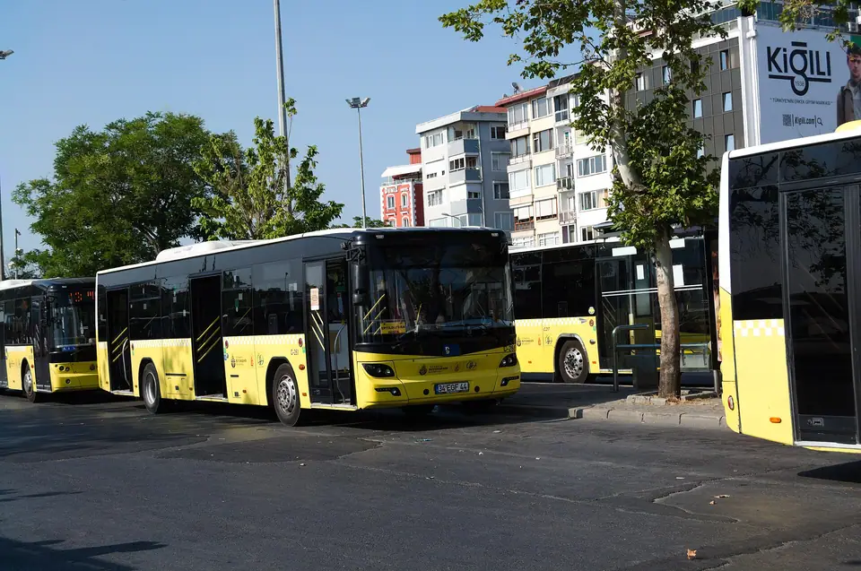
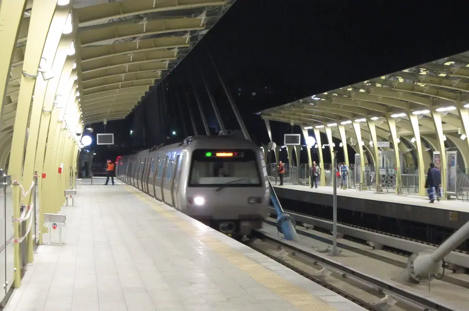

Getting around
Public transport in Istanbul: a beginner's checklist
A starting point for learning the city's transport system. Confirm current fares, student eligibility, and routes through official sources before travelling.

Before your first trip



.JPG){kind=link}


- Check your route using a current map or official transport journey planner.
- Confirm which transport card or payment method is accepted on your planned services.
- Check the current fare and any transfer rules before travelling.
- Allow extra time for transfers, crowds, and unfamiliar stations.
- Save the address of your destination and the nearest station.
Student discounts
Eligibility and application steps may depend on your current student status and documentation. Confirm the latest requirements through the official Istanbul transport-card channels; do not rely on an old screenshot or a third-party post.
Official sources
Check fares, card rules, and service changes directly with the operators:
- İstanbulkartThe city transport card, including card types and top-ups.
- Metro İstanbulMetro, tram, and funicular lines.
- İETTCity buses and Metrobüs.
- Şehir HatlarıPublic ferry routes and timetables.
Links checked October 2026. Websites may be in Turkish only.
Keep a simple record
Track your weekly transport spending for a month. That will give you a more realistic budget than guessing based on occasional trips.
This guide is general information, not an official transport notice. Verify current details before relying on them.
Was this helpful?
Spotted an error or outdated detail? Suggest a correction.